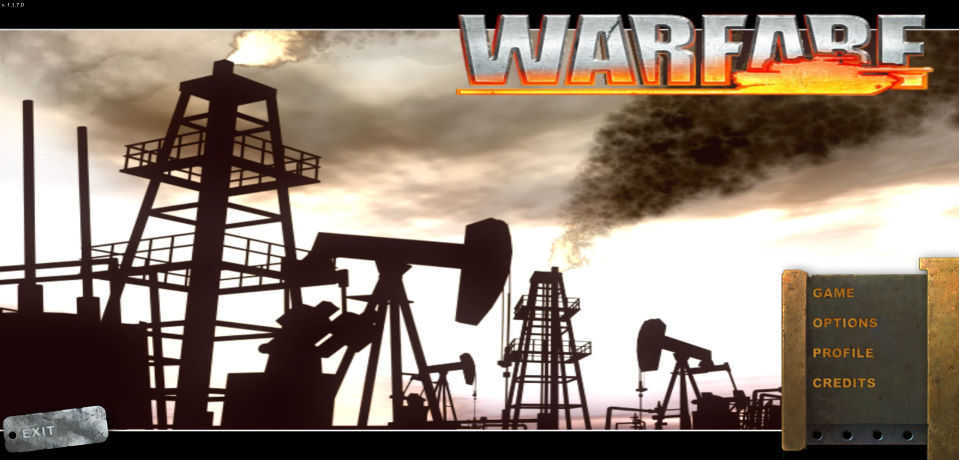
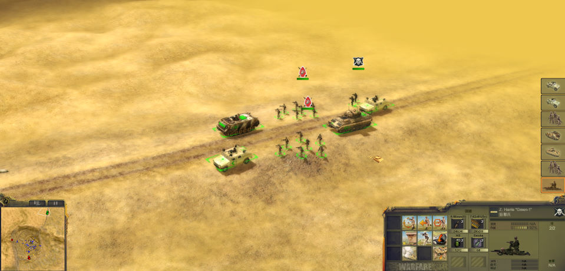

名稱：決勝戰場 (Warfare，中文版) 簡介：GFI 2008年出品的即時戰術遊戲，由英寶格中文化並代理發行 [待補]。

備註：繁中版為1.1.7.0版 保護：光碟StarForce 5.50 備註：VirtualBox無法執行，虛擬機請使用VMware。 備註：遊戲需要安裝PhysX（遊戲光碟有8.04.25獨立安裝檔）。 備註：XP系統執行前，要先更新DirectX版本（遊戲光碟有獨立安裝檔）。 備註：執行StartUp.exe時，不能有任何標題為「Warfare」的視窗，否則無法啟動。 檔案：nocd.rar = 免光碟檔